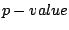
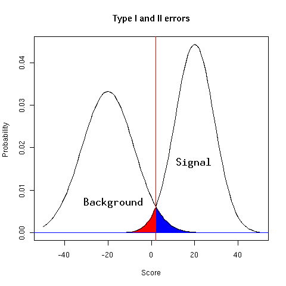

Next: Switch power(required) and pValueLimit(optional)
Up: SITEBLAST commandline options
Previous: Switch P, Seed search
To identify seeds by PWM scans, one has to discriminate true from false positives. The pValue option sets the proportion of accepted false positives (blue area in image below). This pValue is divided by the length of the scanned sequence to adjust for multiple testing. A limit on the power (proportion of true positives) can be set optionally. In short, one fixes a  for all matrices and is free to add a lower boundary on the power (area under signal curve above score threshold).

Commandline options are:
-pValue=]0,0.1[
-powerLimit
Christoph Dieterich
2004-12-06